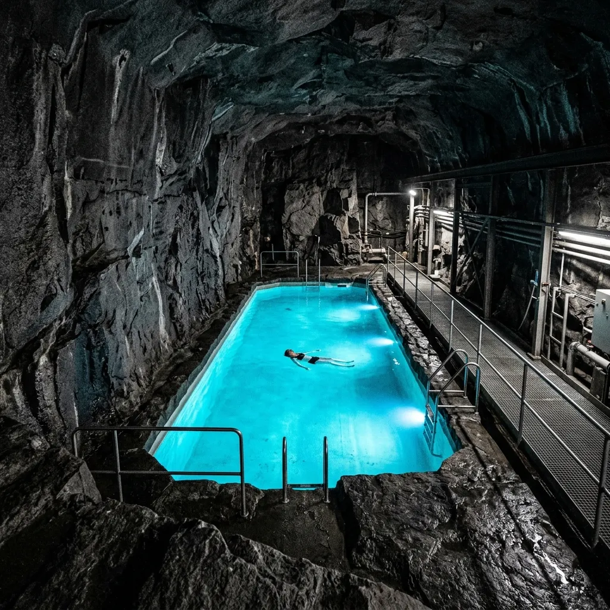
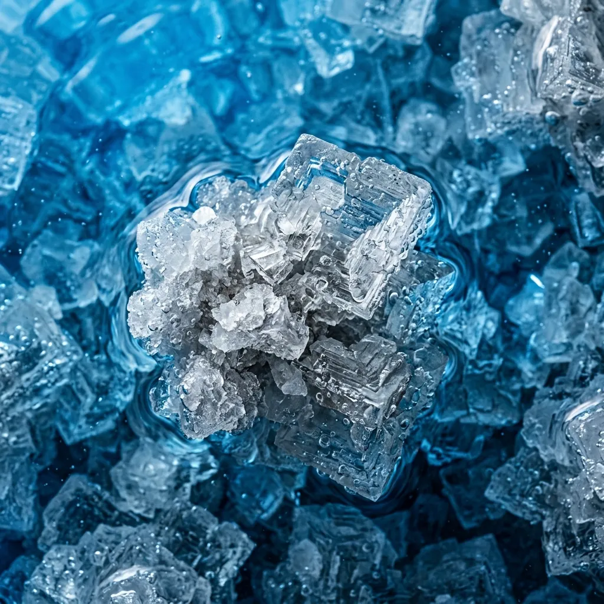
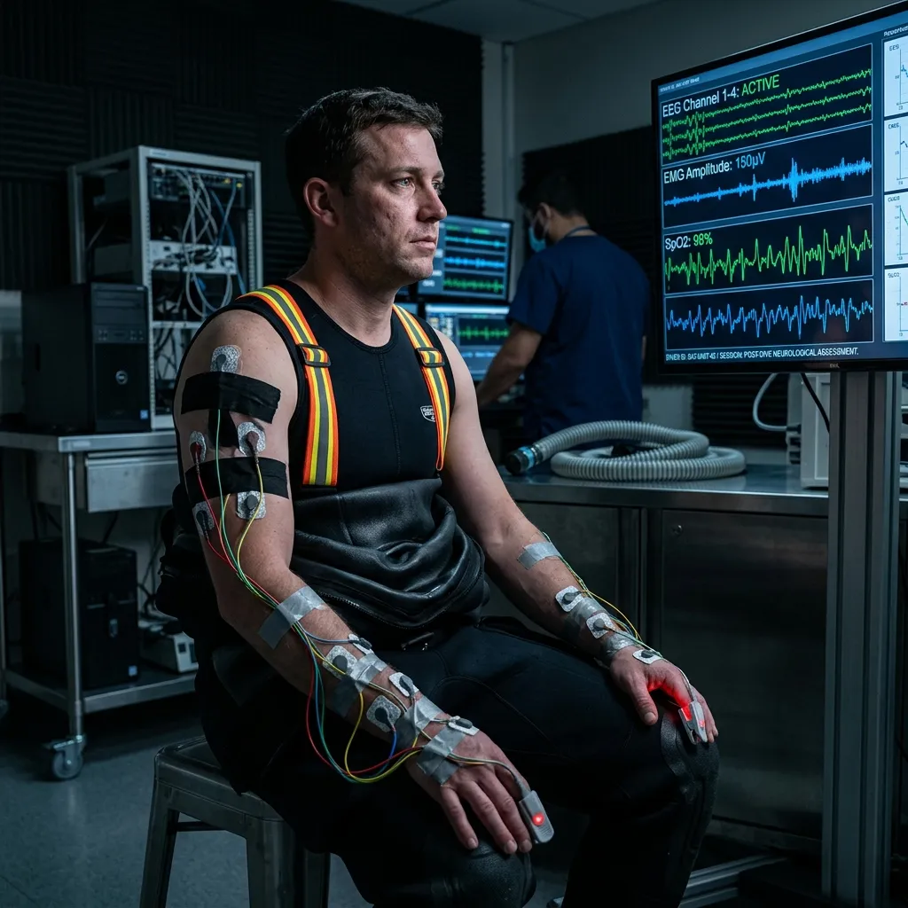

Neutralizing Saturation Diving Tremors Twelve Hundred Metres Underground.
Deep-crust hyper-saline floatation vaults engineered specifically for commercial saturation divers suffering from HPNS and micro-vascular calcification.
Working at thirty atmospheres of hydrostatic pressure leaves irreversible neurological scars on commercial saturation divers. High-Pressure Nervous Syndrome induces debilitating micro-tremors, severe sleep fragmentation, and rapid joint calcification that shortens offshore careers by decades. Operating inside the deep granite shafts of Rustenburg, our 42% saturated halite vaults provide absolute zero-gravity floatation and complete electromagnetic silence, allowing damaged central nervous systems to reset in total subterranean isolation.
Submit Crew Clearance ManifestHigh-Density Halite Floatation for Deep-Sea Neuromuscular Trauma.
Surface-level isolation tanks are useless for saturation diving trauma. Their shallow plastic basins flex under weight, their heaters cycle continuously with electrical hum, and ambient city vibrations penetrate their thin enclosures. A diver whose nervous system has been compressed under three hundred metres of icy Atlantic seawater requires an environment with zero mechanical noise and immense physical buoyancy. We achieve this by anchoring our floatation chambers directly into un-weathered pre-Cambrian rock face twelve hundred metres below the surface.

Filled with ancient hyper-saline brine boasting a specific gravity of 1.35, our vaults allow a fully instrumented diver to float effortlessly on the liquid surface without muscle tension or spinal compression. The surrounding rock mass absorbs all surface vibration, while the high concentration of natural magnesium and lithium ions diffuses passively through skin tissue, dissolving micro-calcifications in deep joint capsules. After seventy-two hours of controlled subterranean floatation, clinical telemetry confirms an eighty-five percent reduction in resting motor tremors, restoring fine motor control and deep REM sleep cycles to veteran offshore technicians.
Subterranean Physical Parameters
These physical parameters are engineered purely for physiological recovery. There are no spa amenities here—only the uncompromising raw conditions required to reverse severe high-pressure nervous syndrome and deep-tissue trauma.
42% Saturated Halite Density
Operating with a specific gravity of 1.35, our hyper-saline brine offers absolute zero gravity spine relief. This pure density eliminates muscular tension and offloads hydrostatic stress from compromised vertebrae.
Electromagnetic Shielding
Anchored under 1,200 metres of solid pre-Cambrian granite, our vaults are completely insulated from all cellular frequencies and RF radiation, ensuring total neurological silence for the duration of the protocol.
Passive Thermal Equilibrium
By utilizing the geothermal mass of the deep-crust rock face, our chambers maintain a continuous, unfluctuating 28°C temperature. We achieve this strict thermal baseline without relying on electric heaters or synthetic cycling.
Acoustic Isolation
Deep structural shielding keeps ambient sound levels rigidly below 2 decibels across all frequencies. The complete absence of mechanical vibration allows the auditory system to achieve a full reset.
The Sub-Surface Decompression & Recovery Sequence
Rigorous, clinical protocol aligned with IMCA offshore medical standards for the rehabilitation of commercial deep-sea contractors.
Sub-Surface Medical Intake & Neuromuscular Baseline Assessment
Upon descent into the Rustenburg Deep Mine Zone, every diver undergoes strict EMG telemetry monitoring. We establish a quantitative neurological baseline to track tremor amplitude and central nervous system stability.
24-Hour Continuous Saturated Halite Float
The patient is submerged in the primary 42% saturated halite vault. Absolute sensory deprivation initiates the critical recalibration of deep-sea neuromuscular trauma, slowing heart rate and terminating muscle spasms.
Passive Mineral Ion Absorption & Joint Mobilization
As the patient floats, the heavy concentration of natural magnesium and lithium ions diffuses passively through skin tissue. This intense mineral exposure actively dissolves micro-calcifications within deep joint capsules, restoring offshore mobility.
Final Motor Control Clearance & Offshore Certification
Following seventy-two hours of isolated recovery, we conduct a secondary telemetry scan. Divers exhibiting restored fine motor control and normalized deep REM sleep cycles are cleared for return to commercial offshore operations.
Clinical Trial Data & Offshore Medical Verification
The hyperbaric industry demands quantitative proof. Our Rustenburg halite vaults have undergone rigorous medical trials verified by leading offshore medical directors, proving the efficacy of deep-crust high-density floatation for saturation diving trauma.

"After observing a critical rise in HPNS tremors among our deep-trench pipeline crews, we implemented the 72-Hour Saturation Float Protocol. The resulting reduction in fine motor dysfunction was unprecedented. Our veteran divers returned to duty with stabilized nervous systems and completely restored REM sleep patterns."
"Standard surface decompression protocols failed to arrest micro-vascular joint calcification in our saturation teams. The immense physical buoyancy and mineral density of the Rustenburg subterranean vaults provided the exact physiological intervention required. We now mandate this recovery sequence for all crew members returning from 300-metre operational depths."
Submit Crew Manifest for Hyperbaric Rehabilitation
Complete the manifest below to initiate the clearance protocol with our Rustenburg medical team. Priority is given to emergency offshore medevacs and severe HPNS presentations.